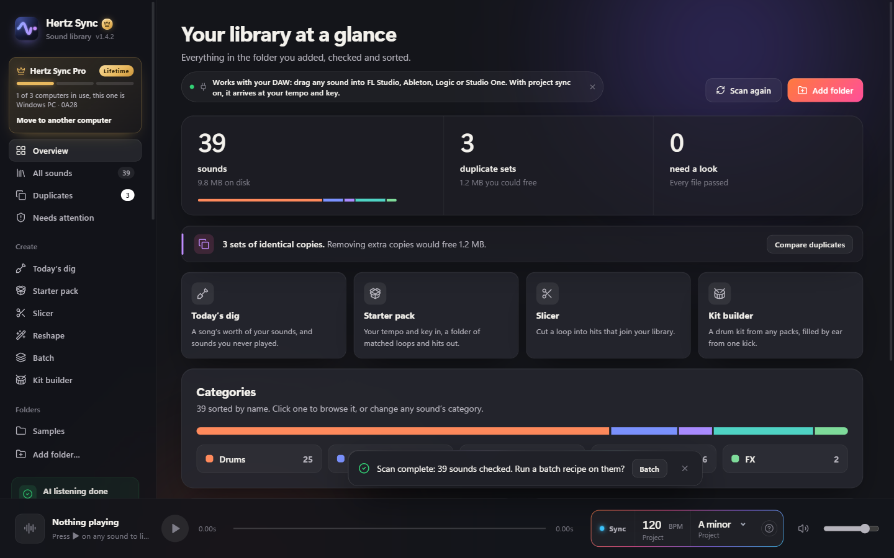
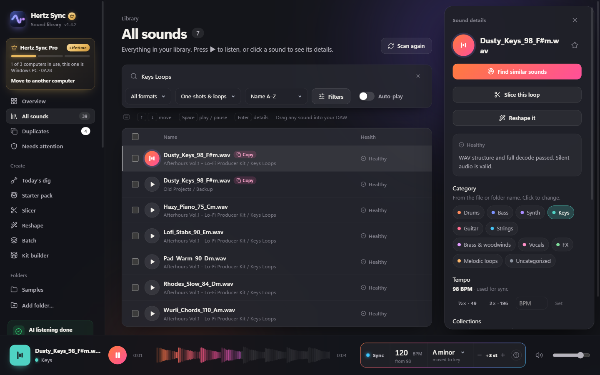
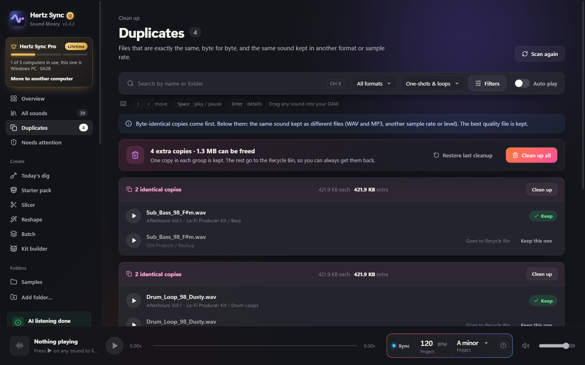
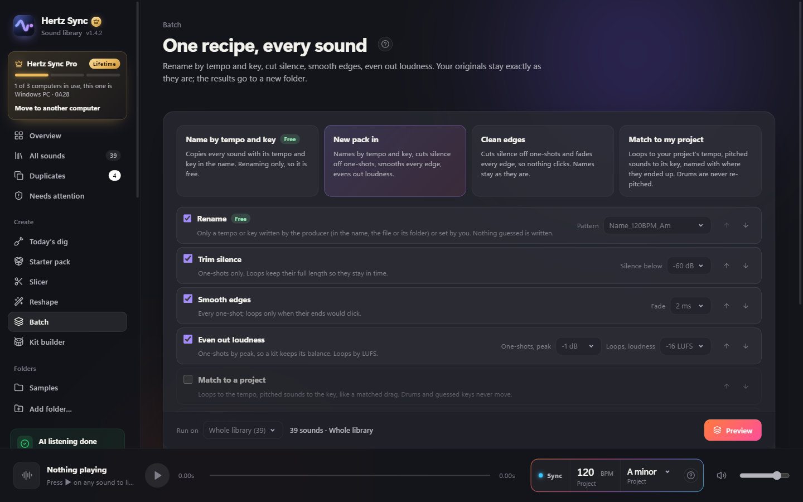
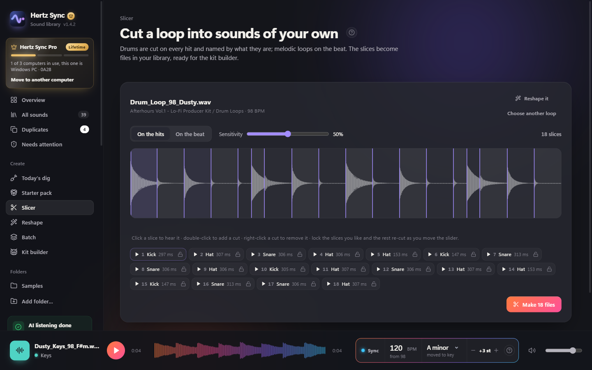
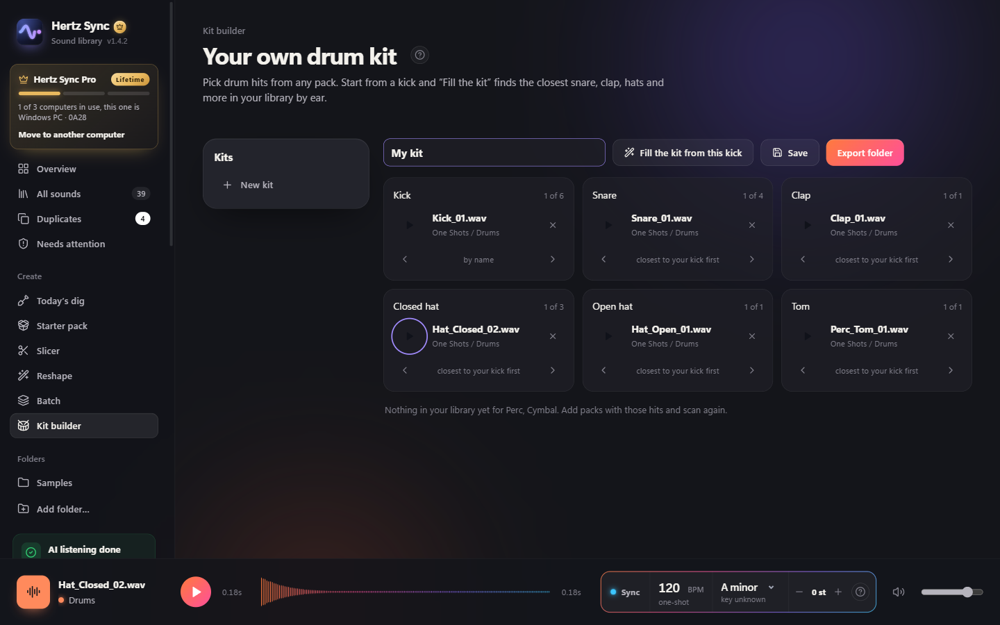
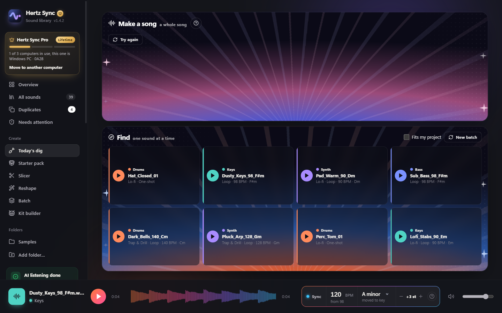

Find any sound you own
FreeEvery pack in one library, sorted into Drums, Bass, Keys, Vocals, FX and more, and loops by style. Search, then audition with the arrow keys. Collections give each project its own kit without moving a file.
Set your project's tempo and key once. Every loop you browse plays in it, and what you drag into your DAW arrives already matched.
Your library
Your DAW 120 BPM · A minor
Illustration. Free: 5 matched drags a day. Pro unlimited.
Wrong tempo, wrong key. You find out after dragging it in, warping it and re-pitching it. Twenty times a session, and the idea is gone.
Same loop, already in time and in key.
Loops stretch to your tempo and move to your key as you browse. A spectral stretcher keeps drums tight and chords clean, and every copy is a whole number of beats long, so it loops without a click.
With Pro, what you drag in arrives exactly as you heard it. No warping or re-pitching on the timeline.

The tempo in a file's name, in its metadata (ACID WAVs, Apple Loops, MP3 tags) or in its folder name is used as is. Most loops never need guessing.
A key in the file name is used as is. Without one, Hertz Sync suggests two keys to pick from (the right one was among them for about 8 in 10 commercial loops in our tests), or you tune it with − / +.
Drums and effects aren't re-pitched unless you tune them, and a guessed key is never used without your click. A tempo it isn't sure of plays as is, and you can set it.
Matched copies are standard WAVs in Music/Hertz Sync/Synced Sounds and are never moved, so a project you open next year still finds every one.
Sync is why you open it. These are why you keep it open.
Free, with no limit on time

Every pack in one library, sorted into Drums, Bass, Keys, Vocals, FX and more, and loops by style. Search, then audition with the arrow keys. Collections give each project its own kit without moving a file.

Finds byte-identical copies and files that won’t open, across every folder. Copy the library into real category folders without breaking old projects, with one-click undo.
With Pro

One recipe for a whole pack: trim, fade, even out loudness, match to your project, WAV or FLAC. Originals stay as they are. Renaming by tempo and key is free.

Cuts drum loops on every hit and names each slice by ear: Kick, Snare, Hat. Melodic loops are cut on the beat. Slices become files in your library.

Pick a kick and “Fill the kit” finds the closest snare, clap, hats and perc in every pack you own, by how they sound. Export it for your sampler.

Sounds you bought but never played, dug out daily. Or a song’s worth of parts in one tempo and key, or a folder of matched loops for your track.
No subscription. Buy Pro once and every 1.x update is included.
Secure checkout by Gumroad. Your license key arrives by email. Not happy? Full refund within 7 days.
Free download. Pro unlocks inside the app with your license key.
Windows 10 or 11, 64-bit
Download for WindowsVersion 1.4.2 · SHA-25626e2574c975b76d065b20c3c3bf288176640cb93a065a7b313055b381c2de64e
macOS 11 or later, Apple Silicon (M1 and newer)
Download for MacVersion 1.4.2 · SHA-25692e981a57df6662498e3056a050d67be47819f56e837ad272ad8506a25a085b2
A small release that makes the library easier to move around in, and tells you more when Sync can’t be sure of a tempo.
Hertz Sync contains no malware, adware or third-party extras, and collects no data: your library never leaves your computer. Online, it only checks your license key (with an anonymous id for your computer) and asks GitHub whether a newer version is out.
Why a warning appears anyway: both systems warn about any app from a new, independent developer that isn't yet signed with a paid certificate. It's about who published the file, not about anything found in it.
xattr -dr com.apple.quarantine "/Applications/Hertz Sync.app" and open the app again. This only removes the "downloaded from the internet" mark from Hertz Sync.You only do this once; after that Hertz Sync opens normally.
To check your download is the original, compare its SHA-256 with the one above (Windows: certutil -hashfile HertzSync-Setup-x64.exe SHA256; Mac: shasum -a 256 HertzSync-macOS-AppleSilicon.dmg). You can also scan it at VirusTotal.
One key unlocks Pro on 3 computers at a time. Switching takes a minute: no emails, no waiting.
Still stuck? Reply to your Gumroad receipt email and we'll free it for you.
Not unless you ask it to. Categories live inside Hertz Sync. Sorting on disk copies your sounds into a new folder by default and leaves the originals where they are; moving is optional and can be undone.
No. Scanning, sorting and the AI listening all run on your computer, and it works offline. Online, it only checks your license key and asks GitHub whether a newer version is out.
I’m Quillon Holden, an independent developer and music producer. I built Hertz Sync under my label Vykra because my own sample folders had become impossible to search, and finding a loop that fit the track took longer than making the track. Questions or ideas? Reply to your purchase email and it comes straight to me.
Yes. Within 7 days of buying, reply to your purchase email and you'll get a full refund, no reason needed. See the refund policy.